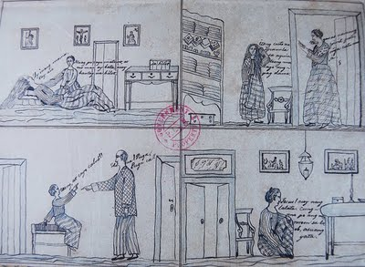

Personal Information
JOSE PROTACIO MERCADO RIZAL ALONZO Y REALONDA (1861-1896)
Birthday: June 19, 1861 (Moonlit of Wednesday between eleven and midnight)
Hometown: Calamba Laguna
Meanings of Name:
- Doctor- completed his medical course in Spain and was conferred the degree of
Licentiate in Medicine by the Universidad Central de Madrid
- Jose- was chosen by his mother who was a devotee of the Christian saint San
Jose (St. Joseph)
- Protacio- from Gervacio P. which come from a Christian calendar
- Mercado- adopted in 1731 by Domigo Lamco (the paternal great-greatgrandfather
of Jose Rizal) which the Spanish term mercado means ‘market' in English
- Rizal- from the word ‘Ricial' in Spanish means a field where wheat, cut while still
green, sprouts again
- Alonzo- old surname of his mother
- Y- and
- Realonda- it was used by Dona Teodora from the surname of her godmother
based on the culture by that time
FAMILY
The Mercado - Rizal Family
The Rizals is considered one of the biggest families during their time. Domingo Lam-co, the family's paternal ascendant was a full-blooded Chinese who came to the Philippines from Amoy, China in the closing years of the 17th century and married a Chinese half-breed by the name of Ines de la Rosa.
Researchers revealed that the Mercado-Rizal family had also traces of Japanese, Spanish, Malay and Even Negrito blood aside from Chinese.
Jose Rizal came from a 13-member family consisting of his parents, Francisco Mercado II and Teodora Alonso Realonda, and nine sisters and one brother.
Parents:
Don Francisco Mercado (1818-1898)
-born in Binan, Laguna on May 11, 1818
-studied Latin and Philosophy at the College of San Jose in Manila
-became a tenant-farmer of the Dominican-owned hacienda
-a hardy and independent-minded man, who talked less and worked more, and was strong in body and valiant in spirit
-died in Manila on January 5, 1898 at the age of 80
-Rizal affectionately called him "a model of fathers"
Dona Teodora Alonso Realonda (1826-1911)
-born in Manila on November 8, 1826
-educated at the College of Santa Rosa, a well-known college for girls in the city
-a remarkable woman, possessing refined culture, literary talent, business ability, and the fortitude of Spartan women
-is a woman of more than ordinary culture: she knows literature
June 28, 1848 - The day Francisco Mercado and Teodora Alonso Realonda became married.
CHILDREN:
1. SATURNINA RIZAL (1850-1913)
- Eldest child of the Rizal-Alonzo marriage.
- Married Manuel Timoteo Hidalgo of Tanauan, Batangas.
- Nicknamed "Neneng"
2. PACIANO RIZAL (1851-1930)
- Only brother of Jose Rizal and the second child.
- Studied at San Jose College in Manila
-was a second father to Rizal
-Became a farmer and later a general of the Philippine Revolution.
-had two children by his mistress (Severina Decena)—a boy and a girl
- Immortalized him in Rizal's First novel Noli Me Tangere as the wise "Pilosopo Tasio"
-Died on April 13, 1930, an old bachelor aged 79
3. NARCISA RIZAL (1852-1939)
-The third child. married Antonio Lopez at Morong, Rizal
-a teacher and musician
-her pet name was "Sisa"
-Married to Antonio Lopez(Nephew of Father Leonicio Lopez)
4. OLYMPIA RIZAL (1855-1887)
- The fourth child. Married Silvestre Ubaldo
- died in 1887 from childbirth.
- "Ypia" was her pet name
-married Silvestre Ubaldo, a telegraph operator from Manila
5. LUCIA RIZAL (1857-1919)
- The fifth child. Married Matriano Herbosa.
- -Herbosa died of cholera in 1889 and was denied Christian burial because he was a brother-in-law of Dr. Rizal
6. MARIA RIZAL (1859-1945)
- The sixth child.
- Married Daniel Faustino Cruz of Biñan, Laguna.
- "Biang" was her nickname.
7. JOSE RIZAL (1861-1896)
- the greatest Filipino hero and peerless genius
- The second son and the seventh child.
- He was executed by the Spaniards on December 30,1896.
-"Pepe" was his nickname.
8. CONCEPCION RIZAL (1862-1865)
- The eight child.
- Died at the age of three.
-"Concha" was her nickname.
- Her death was sorrow in Rizal's life.
9. JOSEFA RIZAL (1865-1945)
- The ninth child.
- An epileptic, died a spinster.
-"Panggoy" was her nickname.
-died an old maid at the age of 80.
10. TRINIDAD RIZAL (1868-1951)
- The tenth child.
- Died a spinster and the last of the family to die.
-"Trining" was pet name.
11. SOLEDAD RIZAL (1870-1929)
- The youngest child
- married Pantaleon Quintero.
- "Choleng" was her nickname.
Childhood
Childhood Years in Calamba
Earliest Childhood Memories:
Jose Rizal had many beautiful memories of his childhood in his native town Calamba. It's scenic beauties and it's industrious, hospitable, and friendly folks profoundly affected his mind and character. The happiest period of Rizal's life was spent in this lakeshore town.
The first memory of Rizal, in his infancy, was in the family garden when he was 3yrs. old. Because he was a frail, sickly and undersized, he was given the tenderest care by his parents. His father built a Nipa cottage for him to play in the daytime.
Another childhood memory was the daily Angelus prayer. By nightfall, his mother gathered all the children at the house to pray the Angelus.
He also remembered the aya (nurse maid) related to the Rizal children amy stories about the fairies; tales of buried treasure and trees blooming with diamonds, and other fabulous stories.
Of his sisters, Jose loved most the little Concha ( Concepcion), who was a year younger than him. He played with her and from her he learned the sweetness of sisterly love.
Unfortunately, Concha died of sickness in 1865 when she was only 3yrs. old. Jose cried bitterly at losing her. The death of Concha brought him his first sorrow.
Rizal grew up a good catholic. At age of 3, he would take part in the family prayers. When he was 5yrs. old, he was able to read the Spanish family bible.
He loved to go to church, to pray, to take part in novenas, and to join religious processions.
One of the men he esteemed and respect in Calamba was the scholarly Father Leoncio Lopez, the town priest. He used to visit him and listen to his stimulating opinions on current events and sound philosophy of life.
On June 6, 1868, Jose and his father left Calamba to go on a pilgrimage to Antipolo, in order to fulfill his mother's vow, which was made when Jose was born. After praying at the shrine of the Virgin of Antipolo, Jose and his father went to Manila to visit Saturnina, who was a boarding student in La Concordia College in Santa Ana.
Of the stories told by Dona Teodora, Jose remembered the Story of the Moth. The tragic fate of the young moth, which "died a martyr to it's illusions", left a deep impress on Rizal's mind. He justified such noble death, asserting that "to sacrifice one's life for it", meaning for an ideal, is "worthwile". And, like that young moth, he was fated to die as a martyr for a noble ideal.
At age of 5, he began to make sketches with his pencil and to mould in his clay and wax objects. Jose had the soul of a genuine artist. He also loved to ride the pony that which his father gave him and take long walks in the meadows and lakeshore with his black dog named Usman.
Aside from his sketching and sculpturing talent, Rizal possessed a God-given gift for literature. At age of 8, Rizal wrote his first poem in the native language entitled Sa Aking Mga Kababata (To My Fellow Children).
After writing his first poem, Rizal who was then 8yrs. old, wrote his first dramatic work which was a Tagalog comedy.
Rizal was also interested in magic. He learned various tricks, such as making a coin disappear and making a handkerchief vanish in thin air. He read many books on magic and attended performances of the famous magicians in the world.
Education
Jose Rizal's Educational Background
Rizal's first teachers:
1.Dona Teodora
- was his mother she was patient, conscientious and , understanding
- she discovered that her son had a talent for poetry
- she encouraged him to write poems
2. Private Tutors of Rizal
- Maestro Celestino
- Maestro Lucas
- Leon Monroy
Rizal goes to Binan,Laguna:
- June, 1869 Rizal left for Binan
- Was accompanied by Paciano his older brother
- He was taught by Maestro Justiniano
- In academic studies, Rizal beat all Binan boys
- He surpassed them all in Spanish, Latin, and other subjects
Life and Studies in Ateneo
- Ateneo De Municipal established by the Jesuits
- Rizal entered in 1872
- He belonged to the class composed of Spaniards, mestizos and Filipinos
- His teacher was Fr. Jose Bech
- He was considered as an inferior and was placed at the buttom of the class
- By the end of the month he became the emperor and received a prize, a religious picture
- To improve his Spanish Rizal took private lessons in Santa Isabel College
- During his 4th year in Ateneo he received 5 medals and graduated as sobresaliente
- He graduated on March 23, 1877(16 years old)
- Received the degree of bachelor of arts, with highest honors not a valedictiorian
Extra Curricular Involvement
- an emperor inside the classroom
- campus leader
- active member and became a secretary, the Marian Congregation Religious Society
- member of the Academy of Spanish Literature and the Academy of Natural Sciences
- poet
- studied painting under the famous Spanish Painter, Agustin Saez
- improved his sculpture talents under the supervision of Romualdo de Jesus
- engaged in gymnastics and fencing and continued the physical training under his sports-minded Tio Manuel.
Medical Studies in University of Sto. Thomas (1877-1882)
- After graduating , he continued his education at UST
- He finished a year in Philosophy and Letters
- He decided to shift to a medical course
- UST was under the Dominicans , rival of the Jesuits in education
- Remained loyal to Ateneo participated in extracurricular activities in Ateneo and completed a course in surveying
- As a Thomasian he won more literary laurels
- During his first term in 1877-1878 in UST, he studied Cosmology, Metaphysics , Theodicy and History of Philosophy.
- It was during the school term 1878-1879 that Rizal pursued his studies in medicine
Reasons why Rizal wanted to study Medicine:
- He wanted to be a physician so that he could cure his mother's failing eyesight
- Fr. Pablo Ramon, the Father Rector of Ateneo whom he consulted for a choice of career, finally answered his letter , and recommended medicine
Pre- Med Course
- Curso de Ampiacion or Advanced course in Physics, Chemistry and Natural History.
- Out of the 28 young men taking Ampliacion only four including Rizal were granted the privilege of taking simultaneously the preparatory course and the first year of medicine
- Rizal also received his four year practical training in medicine at the Hospital de San Juan de Dios in Intramuros
- During his last year at the University, Rizal had obtained the global grade of Notable(Very Good) in all of his subjects, and he was the second best student in a decimated class of seven who passed the medicine course. After which, Rizal decided to study in Spain.
Academic Journey To Spain ( 1882-1885 )
- His departure for Spain was kept secret from Spanish Authorities, friars and even his parents especially his mother because she would not allow him to go
- To avoid detection , he used the name Jose Mercado
- On May 3, 1882 he boarded on Salvadora bound for Singapore where he was the only Filipino passenger
- On November 3, 1882, he enrolled in Universidad Central de Madrid taking up two courses: Philosophy an Letters and Medicine
- On June 21, 1884 , he conferred the degree of Licentiate in Medicine
- The Following academic year , he studied and passed all subjects leading to the degree of doctor of medicine
- Unfortunately, he was not able to submit the thesis required for graduation nor paid the corresponding fees
- With that, he was not awarded his Doctor's Diploma
- Jose Rizal also finished his studies in Philosophy and Letters with higher grades
- He was awarded the Degree of Licentiate in Philosophy and Letters by the Universidad Central de Madrid June 19, 1885 with the rating of excellent.
Opthalmology studies and travels in Europe
- Jose Rizal went to Paris and Germany in order to specialize in ophthalmology. Among all branches, he chose this specialization because he wanted to cure his mother's failing eyesight.
- In 1885, after studying at the Universidad Central de Madrid, Rizal, who was then 24 years old, went to Paris to acquire more knowledge in ophthalmology
Rizal friends in Europe:
- Maximo Viola
- Senor Eusebio Corominas
- Don Miguel Morayta
- Dr. Louis de Weckert
- On February 3, 1886, after gathering some experience in ophthalmology, he left Paris and went to Heidelberg, Germany
- He worked at the University Eye Hospital under the direction of Dr. Otto Becker, a distinguished German ophthalmologist
- On April 22, 1886, Rizal wrote a poem entitled A Las Flores de Heidelberg (To the Flowers of Heidelberg) because he was fascinated by the blooming flowers along the Neckar River, which was the light blue flower called "forget-me-not".
- On August 14, 1886, Rizal arrived in Leipzig. There, he attended some lectures at the University of Leipzig on history and psychology
Resons Why Rizal choose to reside in germane longer:
- to gain further his studies in science and languages
- to observe the economic and political conditions of the German nation
- to associate with the famous scientists and scholars
- lastly to publish his novel Noli Me Tangere
Jose Rizal earned a Licentiate in Medicine at the Universidad Central de Madrid, where he also took courses in philosophy and literature. It was in Madrid that he began writing Noli Me Tangere. He also attended classes in the University of Paris and, in 1887, he completed his eye specialization course at the University of Heidelberg. It was also in that year that Rizal's first novel was published in Berlin
1. There are three animals named after Rizal.
These species of animals were the ones he collected while he was an exile in Dapitan and include Apogonia Rizali (Heller), a type of small beetle; Draco Rizali (Wandolleck), a species of flying dragon; and Rachophorous Rizali (Boetger), a species of toad.
2. Contrary to popular belief, the Rizal monument in Luneta was not made by a Filipino artist.
The design was the work of Swiss sculptor named Richard Kissling who won second prize in an art competition that was held in 1907 to find the best scale model for the future Rizal monument. The first prize went to Italian sculptor Carlo Nicoli of Carrara but for some reason, the contract to build the monument was given to the second-prize winner.
3. Rizal cured himself of tuberculosis, and was later recognized as a tuberculosis expert.
4. He was already a terrific sculptor even at a very young age.
In fact, Rizal carved a 9-inch statuette of the Sacred Heart out of batikuling wood when he was only 14 years old. The Jesuit fathers brought this statuette in Fort Santiago when they visited Rizal in December 1896. Aside from wood sculptures, Rizal also carved 40 amazing masterpieces out of plaster, terra-cotta, wax, and clay.
5. When he was studying in Spain, Rizal had to pawn a ring owned by his sister Saturnina just to pay for his exams.
But he didn't want his family to get worried, so he only mentioned his victories and excellent grades in the letters addressed to his family.
6. "Mi Retiro", the name of his place of exile in Dapitan, was inspired by his favorite park in Spain, the Parque del Buen Retiro.
7. He left specific instructions on how he wanted to be treated after his death.
Here are some of his "last wishes":
8. Rizal is regarded by many as the "Father of Philippine Comics"
because of some humorous illustrations he made in Germany. The said drawing, entitled "The baptism of two brothers", was inspired by the German cartoon "Max and Moritz" and was made by Rizal to entertain the children of his landlord, Pastor Ulmer. The original copy is now preserved in the National Library of the Philippines.
9. Rizal had psychic abilities.
On his journal entry dated January 1, 1883, he shared about a "frightful nightmare" he had two nights before (i.e. December 30). In this dream, Rizal was imitating a dying actor and felt his "breath was failing" and his vision became very dim. Interestingly, Rizal would be executed 13 years later at the exact same date. Austin Coates, Rizal's biographer, also underscored that there were many incidents written in both Noli Me Tangere and El Filibusterismo that eventually happened to Rizal in real life.
10. According to Faustino "Tinong" Alfon, Rizal's former cook in Dapitan, our national hero's favorite fruits were lanzones and mangoes.
His meals back then usually consisted of three kinds of ulam. Rizal's breakfast, on the other hand, was usually comprised of hot chocolate, rice, and sardinas secas, commonly known now as simply tuyo.
11. Rizal was widely featured in cigarette wrappers. Most of these wrappers, made with Art Deco or Art Nouveau designs, were produced in Binondo during the turn-of-the-century. An old cigarette label, Las Delicias, even went to the extreme by featuring Rizal smoking a cigar.
12. Rizal was exceptional and prolific in a wide range of subjects-except music.
This is because he already realized early in life that his singing "sounded like the braying of an ass."
13. Vital statistics: Rizal was about five feet three inches tall and had a waistline of about 25″ to 26″.
He also had a big head: His hats were 6 1/2″ across and the interior measures 8″ from front to back. He didn't look odd, though, as his broad shoulders and developed neck compensated for it.
14. Rizal's original execution photo features a dog, the mascot of the firing squad.
It is said that the dog ran around the corpse whining after a soldier fired one last shot in Rizal's head to make sure he was dead.
15. It was rumored that both Adolf Hitler and Mao Zedong were the illegitimate sons of Jose Rizal.
16. Only one of Rizal's skeletal remains was not buried under the monument in Luneta.
A vertebra or a piece of the backbone where Rizal was allegedly hit by the bullet was claimed by his family and is now displayed in Rizal Shrine, Fort Santiago.
17. During Rizal's execution, a total of 8 Filipinos armed with Remingtons formed the firing squad.
There were also 8 Spanish soldiers with Mausers behind them, ready to shoot the Filipino soldiers if they refused to execute Rizal.
18. A descendant of one of the executioners, Adolfo Pastor Quetcuti, revealed that only one of the rifles was loaded with bullets.
He explained that this is to ease their guilt as they already knew in the beginning that Rizal was innocent.
19. Rizal stuffed unknown papers in his pockets and shoes on the eve of his execution.
He did this, assuming that his corpse would be turned over to his family after the execution. But as we all know, his body was dumped by Spanish officials in an unmarked grave in Paco cemetery. The papers had since deteriorated, the contents of which were never identified.
20. Rizal had a third, unfinished novel.
Known among historians as "Makamisa", this unfinished work was started by Rizal in Hongkong in 1892. Makamisa was not actually the title of Rizal's work, but only the title of a single chapter of the unfinished Tagalog novel.
21. Rizal once sent a love letter written in invisible ink to Leonor Valenzuela, a tall girl from Pagsanjan.
The message could only be deciphered if you put the letter over a lamp or candle. Leonor Valenzuela was one of Rizal's first sweethearts. Unfortunately, they parted ways when Rizal had to leave for Spain.
22. "A la Senorita C.O. y R.", one of Rizal's best poems, was dedicated to Consuelo Ortiga y Rey, a pretty daughter of Don Pablo Ortiga whom Rizal fell in love with when he was in Madrid.
However, Rizal backed out of the blossoming relationship because he was good friends with Eduardo de Lete who was in love with Consuelo. He also wanted to remain loyal to Leonor Rivera who would eventually marry Englishman Henry Kipping.
23. Rizal composed a farewell song for Leonor Rivera just before his departure for Europe.
The song, entitled "Leonor", became very popular "that many were heard singing it in the streets and during social gatherings. The moment they saw Leonor, the children would sing the song." Here is the English translation of the song:
And so it has arrived: the fatal instant,
the dismal injunction of my cruel fate;
and so it has come at last: the moment, the date,
when I must separate myself from you.Goodbye, Leonor, goodbye! I take my leave,
leaving behind with you my lover's heart!
Goodbye, Leonor: from here I now depart.
O melancholy absence! Ah, what pain!
24. Rizal played a key role in the identification of Oncomelania cuadrasi, a Philippine snail that harbors the parasite that causes schistosomiasis.
The said snail was named after a certain Mr. Cuadrasi, a known naturalist in Manila and to whom Rizal sent his specimens of animals and insects for identification.
25. While in Dapitan, Rizal wrote an extensive written discourse on kulam.
Entitled "La curacion de los hechizados" (The treatment and cure of the bewitched), this lesser-known work of Rizal explores the psychological treatment for kulam and even explained that witches were not always women who are old or ugly. He also discussed the difference between hiloanon of the Visayas, who gives poison to her victims, and the manggagaway, the ‘traditional' witch who uses rag doll and pins.

CHRIS
The first thing I noticed in Dr. Jose Rizal's life was that he lived a simple one. He did not choose to have a luxurious life like the most of us have wanted. Even before he became under surveillance by the Spaniards, he had lived his life as simple as possible. I think it was the work of his parents that made him lived like this. I strongly believe that one's lifestyle is influenced mostly by their parents. I learned from the life of Rizal the importance of taking part of the parents to their children's morals.
The second thing that I observed from the life of Rizal was his calmness and ability to think rationally even in the most complicated circumstances. His advocacy of Philippine Independence is by legal and peaceful way that is why he wrote many books in order to fire-up the revolutionary spirit of the Filipinos.
As an educated man...
Rizal's philosophy of education centers on the provision of proper motivation in order to strengthen the great social forces that make education a success, to create in the youth an innate desire to cultivate his intelligence and give him life eternal. In this philosophy, I learned the value of education as a stepping stone towards gaining success for myself and for my country. Since there is an enough motivation to study and explore by wisdom, I made this an encouragement to myself that education shall not only stop within the corners of classrooms but shall also extend until the corners of the world. Rizal's belief that waking up the innate desire of every Filipino youth to cultivate his intelligence is such a great thing that every individual has to ponder. His philosophy was affirmed by his educational attainment, thus giving a strong support of his educational philosophy and giving him the credibility to talk such path towards educational success.
As a religious man...
Rizal did not believe in the Catholic dogma that salvation was only for Catholics and that outside Christianity; salvation was not possible even if Catholics composed only a small minority of the world's religious groups. Nor did he believe in the Catholic observation of fasting as a sacrifice, nor in the sale of such religious items as the cross, medals, rosaries and the like in order to propagate the Faith and raise church funds. He also lambasted the superstitious beliefs propagated by the priests in the church and in the schools. It only shows that Rizal has really taken hold of salvation as a free gift to everyone. This also shows that he opposes the Catholic teaching of money indulgence for the forgiveness of sins. Though Rizal was born from a closely-knit Catholic Family, he still fought for what is true. His religious philosophy approves a part of our Wesleyan beliefs and that is a good thing that we should be happy about. Furthermore, I learned that eventhough he has gone that far in his attainments, he did not lose his humility and his faith to God.
As a political man...
Rizal's guiding political philosophy proved to be the study and application of reforms, the extension of human rights, the training for self government and the arousing of spirit of discontent over oppression, brutality, inhumanity, sensitiveness and self love. Rizal cried out for the independence of his own country and his fellow men. In his cry, he made reforms, he plead through his writings and he courageously laid his opposition against the inhumane and brutal management of the Spaniards over the Filipinos. One thing I learned from his life is that he was not terrified with the strong power of the Spaniards but instead he let himself shine and speak up on the issue that he and his country is facing. This could be a strong passion and determination to set free a country that deserves liberty. I also observed on my readings that Rizal never craved for political power, but instead he served as a catalyst that silently works great in his own ways. At the end of his life, he has remained fighting for freedom, and until his last breath, he has fought a good fight eventhough it caused him his life.
As a socially-equipped man...
Rizal's social philosophy dealt with;
1. man in society;
2. influential factors in human life;
3. racial problems;
4. social constant;
5. social justice;
6. social ideal;
7. poverty and wealth;
8. reforms;
9. youth and greatness;
10. history and progress;
11. future Philippines.
Basing on these philosophies, I can say that Rizal is a very humane, compassionate and benevolent citizen. He has dealt with social problems thru his popular books Noli Me T'angere and El Filibusterismo. He is an ambassador or social justice and equality, which is a very good thing that we should follow. If there were only thousands of persons like Rizal, I believe our society will be at good condition. I always hope I could be like him in some areas of his life, but I know that it is far from reality to happen. But what I am doing is that I am performing at my best, making every effort to become a productive individual in different aspects of life.
CJ
The life of Jose Rizal was a truly inspiring story. Not just as an ordinary story of a Filipino but a story of a very intelligent and talented Filipino, who is ready to sacrifice his whole life just to give freedom and peace to his family, and own nation.
For one semester, I've known who really Rizal is. It might not all about him, but those learning's and knowledge I learned, is enough to say to myself and to other Filipino and even not, that he deserves to be what he have known for today. And that is, the National Hero of the Filipino. His life was truly amazing and colorful for the hero's experiences mold him to what God purposely do to him.
Jose Rizal, for my own insights, tells me the value of certain things which is important for the success of his life. That is God, Family, Country and Self. He could not reach as that far without God. The Lords is the most important one who could determine our success, just like as Rizal feared God and in return, he have been bless abundantly not by material things only but a spiritual one. That is intelligence, skills, love, and compassion. Also the role of family is next important for Rizal had been blessed with a family who could guide him to what he really aims. Even nowadays, family is one of the foundations of a person's character. Next one is country! For Rizal's portray the love of the country as a means of loving his fellow Filipino, thus helping them to attain justice from the evil and corrupt priest and Spaniards who are mistreating them in their own land for God has created us to extend our help with our fellow as a symbol of glorifying Him. And last is Self. I have learned from Rizal's life that you should make yourself fruitfully. He makes himself grow to wisdom and knowledge to use it in God's purpose. He did not say to himself that he is not worth enough and live blind for what is happening in his environment. Thus, he is knows that he is a child of God.
Moreover, Rizal proved that pen is mightier than a sword. For his expertise in writings enable him to convince his whole fellowmen to attain justice, thus destroying an empire. For words flies wherever and ignites every man's feelings. Just like as a saying says that word is powerful, there comes positive and negative in it. It could heal one's heart but also harm another like a double edged sword. Rizal have a God fearing heart so that he have ignite change and peace and thus mean we Filipinos should have a good conscience and God fearing heart to impose positive changes.
If Rizal still lives in our generation, he will sure that all Filipino has an inspiration like him by learning that knowledge is everything that all Filipinos were educated even though they were poor, he will also not teach but he will let us understand what is with being Nationalistic and the importance of loving our own language. Rizal is the hero that is brave, he'll fight for everything even for his own life and work, in the film I watched, he said that we do not need to shed blood, we can fight them with our own knowledge thus showing that we are equal to them.
Thanks to Rizal for he inspires me and thanks to our professor who imparts and explains all this knowledge for us to better understand it.
POLVS
MARTYRDOM HAPPENS only once in a lifetime. And lucky are those whose lives are given for the sake of their countries. History elevates them to the bastions of immortals to be long remembered by their people as inspirations and models to be emulated and idolized by mankind.
One among them was Dr. Jose P. Rizal, the national hero of the Philippines. A glimpse of his life showed he was born in Calamba, Laguna on June 19,1861, as the seventh child of Francisco Mercado Rizal and Teodora Alonzo Realonda. He was a novelist, a poet, historian, linguist, athlete, medical doctor, dentist and opthalmologist. He showed love for his country at an early age which he nurtured until his death. Notwithstanding the perils and dangers of protests and exposes during his time, he manifested his dissent in his two great novels, the Noli Me Tangere and El Filibusterismo, which embodied the frictions and antagonism during the Spanish rule, the resentment against Friar abuses, and the harsh conditions suffered by the Filipino people. He was greatly touched by the death of three famoust priests, Fathers Gomez, Burgos and Zamora, to whom his novel El Filibusterismo, was dedicated.
A peaceful reformist, Pepe, as Rizal was commonly called by his close associates, opposed taking arms against Spain, realizing that it would spell disaster for his people and could bring nothing but misfortune upon them. Instead, he opted for peaceful reforms. Based on his experience as a member of the La Solidaridad, a Filipino reform movement newspaper, he founded the La Liga Filipina with Andres Bonifacio who later founded the Katipunan as a radical offshoot of this movement after Rizal was exiled to Dapitan. However, because of alleged "rebellion and sedition" charges against him by the Spanish authorities, he was executed by the Spaniards in the early morning of December 30,1896 at Bagumbayan, now Luneta or Rizal Park. His death triggered many revolutionary movements and fired up the growing Katipunan rebellion that showcased Filipino valor against all odds. The love for Rizal and his ideals was a battlecry the Spaniards did not want to hear during their rule of the Philippines.
Dr. Jose P. Rizal was a brilliant individual. He served as an inspiration to me as an overseas Filipino. During his lifetime, he spent many years outside the Philippines, enriching himself through education, especially in Madrid, Spain. The distance did not diminish nor reduce his love for his country. Far from his motherland, he looked across the seas to find its strength, as well as its weaknesses, in order to uplift it from the abuses of foreign rule. My mind was too naive at the time I read about him. It never occured to that we are alike in some aspects... that of being overseas Filipinos here in the United States.
At one point in time, he was in San Francisco, California, and occupied a room at the former Palace Hotel (now Sheraton Palace Hotel) overlooking the Bay Area. Like him, I also want to be a doctor. We shared the same belief that students must be urged by patriotic ideals and by their passionate love for their country, the Philippines, love for truth and proper values of education. Dr. Jose P. Rizal had given proof of desiring liberty for his country, and he set down as a premise, the education of the people. His teachings greatly influence me, while I am here in the United States. Like him, I believe in people power and consider myself a modern Rizal youth of today, as the hope of my fatherland's tomorrow.
Whatever the truth may be, we must not lose sight of the fact that we are Filipinos, in thought, word and deed, and I am proud to be one. I was raised in the United States for the past fifteen years, and have partly adopted the American way of life. But still, I love my country, a dignified, free and prosperous Philippines. I would not let my character and integrity be overpowered by foreign culture. I still admire and praise whatever is foreign; however, I will never give up Filipino traditions, beliefs and moral values instilled in me by my parents. I will never degrade nor become ashamed of what was my own.
As the hope of tomorrow, and being at the prime of my life, I would like to be a role model for teeanagers for the upliftment of their educational values. This was our national hero's dream about the youth: to be the future of tomorrow, the future leaders. I would volunteer to lead them, to sponsor symposiums through the help of the Philippine Consulate and the Filipino-American communities and other organizations interested in joining hands to make this dream a reality. Most of the youth here in the United States enthusiastically embrace foreign culture. Precious few have knowledge of our Filipino ways, mores, traditions and culture. In truth, the United States half-consciously helped the Filipinos to grow toward maturity,progress and advancement but it would be abnormal without progress in other directions, like awakening. Education and the raising of the standard of living is an important factor.
Like Dr. Rizal, we must grow through our own struggle. He did it by himself, and did not reckon of course nor ask for help from across the sea. As overseas Filipinos, especially the youth, we must help each other. Let us restore in our minds a sign of hope for the others, who have not yet progressed as far as becoming model Filipinos here and in other parts of the world where we are regarded as immigrants, aliens, TNTs, contract or domestic workers, etc.
Filipinos, like Dr. Rizal, must look for the spring of national strength for the restoration of Filipino moral values. They must learn before it is too late what it means to be truly Filipino. Away from our country, from our national traditions, hopes and reams, Filipinos must do what they can to prove their worth and make themselves useful as members of the community. Loyalty to the Philippines is one of the traits that must be strong and active among us. Dr. Jose Rizal should be our inspiration while we are away from our homeland, and we must succeed in influencing Filipinos to look back and be united in foreign lands.
In this age of immigrant-bashing and racial discrimination, Filipinos, like Rizal, should strive hard to be good examples of law-abiding citizens in their adopted country. We should excel in every aspects of our lives and professions. Our people are known in many field of endeavor. Others even intermarried with Americans. Many foreign professionals, doctors, engineers and lawyers prefer to marry Filipinos. Famous immigration lawyer Attorney Michael J. Gurfinkel, an advocate of Filipino-American rights, paid tribute to our womanhood by marrying the former Millie Sta. Ana. Atty. Gurfinkel, many say, is an American but more Filipino at heart. Businesses and corporate entities prefer Filipino workers because they are hardworking and show loyalty to the compnay they work for.
In closing, I believe that the present and future youth leaders must move on. Theirs are the liberated minds of courageous intellectuals who are prepared to maintain and keep alive the principles and ideals for which our national hero, Dr. Jose P. Rizal, had fought at great odds. We should strive more for recognition and untiy. Every overseas Filipino should have a bit of Rizal, our national hero, in himself.
TASH
Tiny Dancer Hero
There is this idea that heroes inevitably reflect their country. When you think about it historical heroes exist as receptacles of a nation's hopes and dreams. They are the guiding lights, the individuals who helped shape the nature of a people. Heroes are, in other words, can be considered the soul and conscience of a country. Their philosophies, ideals, and examples acting as the benchmarks for right collective action. That, as well, is why each generation must recast their nation's heroes in new forms and view them in new perspectives. Heroes and their actions, much like all of history, are consistently up for reinterpretation. Without that process they will never be relevant. A disturbing question to ask is if our heroes are really relevant today.
As a result, studying how our heroes are approached and constructed in the public sphere gives a country an understanding of who they are as a people. Heroes are a reflection of the values of a people. And if that is the case, as I strongly suspect it is, then the way we currently construct Jose Rizal (the way we approach him and his legacy) does not speak too well of us.
There is something faintly disturbing about the fact that more is written, and known, in popular society (and pop history) about how many languages Rizal spoke (and how many women he supposedly bedded) than the importance of his annotated Morga. Or even that there is this pervasive sense of Rizal the Reformer, without understanding that his reforms were designed to lead to a successful revolution. Oh yes, with Jose Rizal we have turned one of our greatest heroes, one of the great men in history, into a small man; composed of tiny insignificant details that does little to deepen, challenge, or broaden our understanding of Rizal in his (and our) milieu.
If our heroes our a reflection of our society, then how we approach Rizal is all the more damning for how small it makes us look. Maybe Nick Joaquin was right, maybe we have become a nation of minutia.
Personalizing Rizal
There is an interesting ancillary thought when it comes to heroes. More often than not, their importance rests on how an individual approaches and engages with their legacy. We often like to think of heroes in how they changed a society, or how they rebelled against the circumstances of their day. But, the importance of those events and actions lies in how they resonate with the individual. How someone like Rizal, through his words and deeds, will inspire a young Filipino to lead a life dedicated to service, or to benefit their fellow man, or to help the less fortunate. Or even to fight for a collective ideal.
My experience with Rizal, in many ways, I think differs from the norm. I did not actually learn that much about Rizal in a formal educational setting (a by-product of where I went to school). Instead, my discovery of Rizal was shepherded by three of out greatest Rizalistas. So, instead of learning about Rizal through the interpretations (misguided in many cases) of writers like Agoncillo, or Constantino, or Zaide, I read Rizal. I read his essays, his novels, his poems, and his speeches. This began when I was a kid. You could say I was brainwashed to adore Rizal. And quite frankly, I would not disagree.
It goes without saying that I was singularly lucky in how I learned about Rizal. And I do not say this to ‘brag' or 'boast' about the experience. But, when I read some of the more flagrantly disturbing interpretations of Rizal it is shocking. For example, Constantino and his reformist trope. The fact that Constantino had to stoop to carefully editing Rizal's words so they would fit his preconceptions is practically scandalous. Yet, in many ways, Constantino's vision of Rizal is broadly accepted.
One of the problems, and this I feel strongly, with our current approach to Rizal is that it removes him from our ability to relate. Yes, it's fantastic and all that Rizal learned 23 languages (yeah...whatever). But to continue to hold that up as a reason why he should be admired is kind of ridiculous. It's the aggrandizement of minutia. Of little pieces of flotsam and jetsam that basically add up to something ephemeral.
Because of how we approach Rizal, with all these misguided attempts at humanizing him, we (individually and collectively) fail to approach him as he would have wanted: Through his ideas. His dreams. His hopes. His understanding of the Philippines. Its his words that should inspire. His real words, not those carefully edited and culled by colonially deficient pseudo-historians. Not the number of women he supposedly slept with. And most definitely not in the number of languages he spoke.
Yes, Rizal's words. How novel.
The Three Parts of Rizal's Writings
One of the saddest parts of how we have let Rizal down is with regards to his three great works: Noli Me Tangere, El Filibusterismo, and his annotated Morga. We all know the Noli and the Fili, few know the Morga. Which is sad, because while the Noli and Fili reflected his criticisms and worries about the present and future, the Morga is where his passion for the Filipino comes shining through.
The story of the Morga is almost romantic: Rizal sitting in the vastness of a library in London, painstakingly hand copying Antonio de Morga's Sucesos de las Islas Filipinas. Rizal went on to review and read every historical account of the Philippines he could get his hands on. Using those materials, he combed through the entire Morga line by line, offering up pointed criticisms of Morga's history of the Philippines. In those notations we discover Rizal's unwavering belief in the goodness and nobility of the Filipino; even if the scholarship upon which those notations were made was questionable at best. Rizal firmly believed that the study of history must be in service of the needs of the present. This was history as pure propaganda. Rizal's purpose was to ignite the spirit of the Filipino by 'showing' them what was lost. In terms of the scholarly study of history, this type of myth-building is unacceptable. But, for a man who was fighting to preserve the soul of his country, it is perfectly acceptable and understandable. Sometimes you need collective myths to inspire a slumbering people.
Father John Schumacher makes the point that the Noli, Fili, and Morga offer up Rizal's pathway to nationalism for the Philippines. The Morga was the historical foundation upon which the new Philippine nation was to be built; the Noli a searing criticism of the current ills of colonial society; while the Fili was a warning against certain actions that had no hope (at that time) of proving to be successful.
Last year, as we all well remember, was Jose Rizal's 150th birth anniversary. There was the expected pomp and circumstance necessary for such an august occasion. And this year is the 151st celebration of his birthday. I wonder...do we know him any better? For all that has gone on in the last year, are we any closer to understanding what he hoped and dreamed of for the Philippines?
The answer is easily found actually. Just take a look at how his popular image is used and abused. It is almost disturbing how many people seem to speak on behalf of Rizal nowadays.
Broadly, we lack critical engagement with Jose Rizal's actual words. Too much of his writings are filtered through almost perversely erroneous ideology. It is...unfortunate. And it seems that as the years pass by we are leaving Rizal further and further behind.
WHAT DID THE YOUTH LEARN FROM RIZAL AND HOW DID RIZAL
INSPIRE THE YOUTH NOWADAYS TO BECOME THE MODERN WORLD HEROES?
HERE ARE SOME STATEMENTS FROM THE PEOPLE WE INTERVIEWED THAT CAN ANSWER THE QUESTION ABOVE.
1. I have learned that each and every one of us has the right to freedom and to think before you act. Yes he is an inspiration. He inspires me to be a better person when it comes to my family, and to the society.
2. I learned from Rizal that you've got to look back from where you came from. From where you grew up. Your fatherland. Rizal serves as an inspiration in fighting for true sovereignty for our country.
3. The major lesson we can learn from Dr. Jose Rizal is love for God, country and countrymen. Yes he is an inspiration. Like anyone of us, he too is not perfect. He is vulnerable and emotional. He fell in love and got hurt. But unlike any other heroes the world has known for their bravery and courage, he is the gentlest and noblest.
4. He inspires me not only to love my country as well as to love learning, to do my best to excel in the things I do. He is an example that tells that a person can do multiple talents and skills. We just have to discover and practice those talents that are in our nature. He's my inspiration to stand up for what is right and to fight for what I believe in — through writing.
5. I've learned that words are stronger than actions. Well for Rizal it was. He deserves to be an inspiration to every Filipino because of what we have now, we owe it to him. He's done everything in his will to fight for his country and not everyone's like that especially nowadays. His commitment and passion is just beautiful. No doubt he is our national hero.
6. Jose Rizal is by far the Philippines' most popular hero. Hailed as a Renaissance man because of his intelligence and appreciation for the arts, Rizal embodies the best of the Filipino. The things i learned from rizal were: respecting and listening to your elders; be proud of who you are; love your family;believe in yourself and don't be afraid to stand up for what is right. A hero to many. An inspiration for me, that is Dr. Jose Rizal. What he did, what he sacrificed for us and what he made us into are just the things i greatly admired on him. For he awoke the spirit of camaraderie and nationalism on thyselves, for he implanted the seeds of freedom and liberty on our minds and for he made us realized that fighting for it: freedom and independece are the things we need.
7. I learned to love my country more and be proud of being a filipino citizen. he is an inspiration not just to me but to some of my fellow filipino as well since he is the one who is responsible for the realizations of the filipino people to fight for freedom
8. Rizal is a national hero who fought for the filipino war using words and fine literature. Rizal is most certainly an inspiration to me, as well as to other filipino or non-filipino individuals. Why you say? A man who used his words to fight for peace, A man who fought in a war where he did not gave harm to anyone. Dr. Jose Rizal is a prime example that filipinos is not just an "indyo" but can be an international citizen that can specialize in professional fields.
9. I realized many things about the life of Rizal, especially through the hardships he encountered in his time in fighting for the freedom of our country through his works and novels. He inspires me in what he did for our country because he believes that revolution is not the key to freedom but through in his writing. These are the things I've learned from Rizal.
10. I have learned from Rizal the value of perseverance in studying and following the desires of your heart. He is an inspiration because despite of oppression, he stayed strong and true to his beliefs and philosophy.
11. What have you learned from Rizal: Education is something that must be valued because it improves us as a person. Also, that is what makes us different to other living creatures. Lastly, we should fight for what we think is right. Inspiration? Yes. If he probably didn't write the novels Noli Me Tangere and El Filibusterismo, the Philippines today might not be the same. Why? there is a possibility that the "Katipuneros" before will not fight for our freedom. Rizal is one of the reasons why they had the courage to fight. Also, his knowledge and way of thinking is something that can be an inspiration to others.
ON THIS PART, YOU WILL SEE SOME STATEMENTS ON HOW WE SHOULD LIVE AS THE MODERN WORLD FILIPINO HEROES.
As Filipinos, we should do a lot more. This may seem unfair to tell you since you are still young and still studying, but let me tell you, when you study very well, you do not waste your time and you live up to the dreams of your parents and your teachers - you are also doing a lot for your country. You cannot be soldiers or public officials yet, but your serious dedication to your studies is an act for the good of the country since you become the educated youth.
Rizal said, "The youth is the hope of the fatherland." What he actually wanted to say is, "The educated youth is the hope of the fatherland." With education, you can equip yourself with solid knowledge that will elevate you to accomplish your noble purpose. Therefore, without education, the youth is not the hope, but becomes the curse of the nation.
We need the Concept of a Nation - This is where the word Nationalism comes from, "the advocacy of the interest of a nation." Nationalism is "the advocacy, the promotion, the persevering pursuit of what is good for the nation."
First, we should relate ourselves to a nation advancing the interests, the good, and the welfare of our nation, which we call Nationalism. Then, we relate that nation to other nations, which we call internationalism. So, step by step - the Self, the Family the Nation and then the Family of Nations under the auspices of an Almighty God.
Today, nation destroys another nation. You destroy a civilization so your country will win. If you win, you become a super power but you destroy the concept of "International Brotherhood". We won't be considered a "Family of Nations" since in a Family of Nations, we are EQUAL - nation-states possessing sovereignty and national jurisdiction. We may be a poor, developing country, but we are the equal of the United States as far as the International Law is concerned.
Rizal is a great Internationalist as well as a Nationalist. Being a nationalist does not mean Rizal is anti-foreigner or he won't go to other countries. The more he traveled abroad, the more he became profoundly a Filipino by interrelating with other nations and cultures. We should not become a closed nationalist, so that we become a Fascistic nationalist. We should be open to a larger world so that we become Cosmopolitan Internationalist even as we are nationalistic. This is the life of Jose Rizal.
A SEARCH FOR THE MODERN WORLD FILIPINO HERO!
What is a true leader? A leader originates and does not imitate. A leader keeps his eyes on the distant horizon and sees what an ordinary person does not. This is the evidence of his leadership. He does not accept the status quo, but instead challenges it. They follow their genius not just the party line.
Jose Rizal set the pattern of an extraordinary leader. He possessed a great mental caliber that prodded him to enhance his education all over Europe. This, combined with a high sense morality and unselfishness, he found the Filipinos disunited, voiceless, and not ever aware of their miseries. Especially eloquent in Spanish, although familiar with German and French, he wrote and spoke profusely, exhorting the Filipinos to fight peacefully for justice.
He was neither fair skinned nor mestizo, like our actor politicians, yet he had a great following among the foreign and local intellectuals as well as the down trodden.
The Kingdom of God is like a merchant who searches for a precious pearl. When he found one of great value, he sells everything that he has to buy it (Matthew 13:45-16). In the same way a true leader will have to sacrifice much to bring God's Kingdom to us.
FOR THE FILIPINO YOUTH!
Dr. Jose Rizal, our national hero wrote a poem entitled To the Filipino Youth. He wants to inspire the youth to develop their talents, look forward and break the chain of their bondage. Rizal urged the youth to develop their talents and find out what genius would be proclaimed throughout the world for having served the country and they should take pride in their country and to be responsible to become the light of our country
If Rizal is alive today, he will surely still maintain the important vision to the Filipino Youth for the sake of our country. He urged the youth to fly swifter than the wind and descend with art and science to break the change that has bound the poetic genius of the nation. Particularly he will still hold them as to fight or to be raise on, and of course we say that the Filipino Youth turned into what he wanted to become and to seek knowledge in order to live a life of enlightenment which would make the country rise to the height of honor and prestige.
Finally, we must be responsible and be educators because wise education gives birth to sciences and arts, and we could do a lot to improve not only our lives but also the social condition in the Philippines through wise education and the youth is directed along the path of righteousness and goodness, if the youth follow the path, they will be inspired.